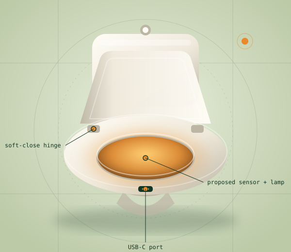
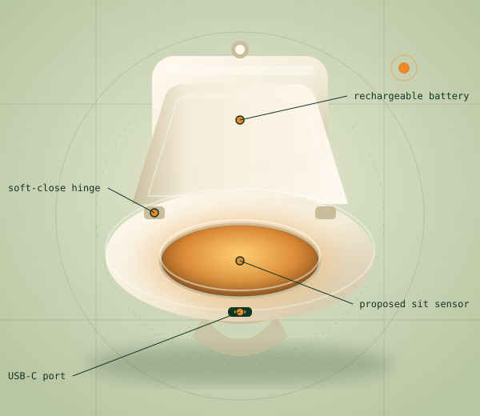
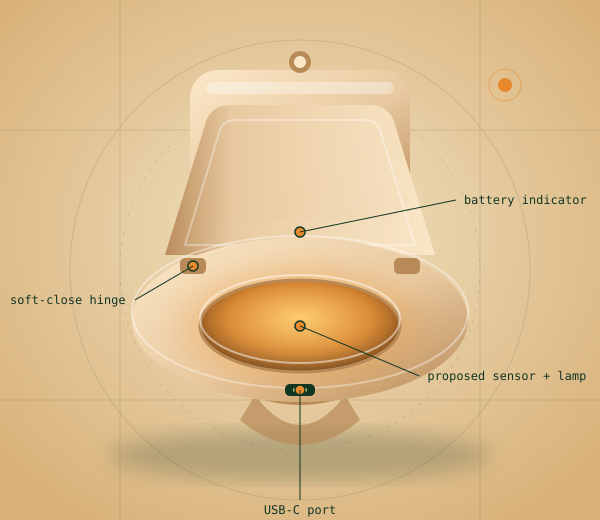
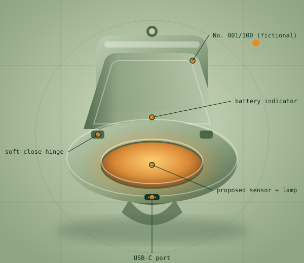

SUNSEAT One
$79 illustrative
For the curious. And the cost-conscious.
- Chalk finish
- Proposed sit activation
- USB-C
- Soft-close
A very bright idea. A very fictional product. Read the disclosures
Wellness. With a little cheek.
Meet the world's most unnecessarily considered toilet seat. A little glow. A lot of engineering. An entirely new meaning to personal sunshine.
Explore the collection See how it works
Fictional concept. Not for sale or use.

Inspired by the conversation. Not validated by the research.
The ritual
Everything below is a concept feature, not a tested engineering claim.
A proposed pressure sensor would notice that you have, in fact, sat down.
A fictional UVB lamp concept would switch on. It is not a proven or safe therapy.
The proposed light would switch off when you stand, and you would carry on with your day.
Product engineering
An anatomy of the concept. Every item is a proposal on a drawing board, not a tested feature.
About the numbers: the fictional brief imagines “3–6 months or 600 operating hours per full charge.” These are unverified, aspirational figures, not measured performance or a guarantee. Real runtime would depend on lamp power, battery capacity, sensor draw and usage. We make no claims that the concept is waterproof, universally compatible, safety-certified or tested.

The collection
Illustrative US dollar prices. No checkout, no waitlist, no data collected.

$79 illustrative
For the curious. And the cost-conscious.
Most considered
$149 illustrative
A little extra. In every possible way.

$299 illustrative
For people who call it a powder room.
The science
The joke is the product. The health information is not a joke.
Background reading: NIH Office of Dietary Supplements, Vitamin D · FDA, Risks of tanning. We could not open these pages while building this site, so the statements above reflect general public-health consensus rather than a fresh check of those pages.
Context
In an article dated August 12, 2026, Forbes contributor Tanya Akim wrote about SOLIUS, a different over-the-counter UVB device. As reported there, the article describes an FDA clearance for a device called Solius Pro, a sham-controlled trial, and device safeguards such as skin measurement, distance sensing and lockouts. The article also notes the trial was not a head-to-head comparison with oral supplements and acknowledges uncertainty around some company claims.
Reviews
All testimonials are invented. They are not real customer experiences or medical evidence.
“I've never felt so seen by an object I sit on.”
“Finally, a conversation piece that ends the conversation.”
“The USB-C really brings the whole bathroom together.”
FAQ
No. SUNSEAT is a fictional concept and a parody of wellness marketing. It is not for sale or use, and it is not a medical device.
The original premise used red light. The fictional concept switched to UVB because UVB can stimulate vitamin D production in skin. The amber glow in our illustrations is decorative and does not depict invisible UVB. Red light does not produce vitamin D.
There is no established benefit of targeted anal UVB exposure, and UVB can cause burns, DNA damage and skin-cancer risk. Please don't try it. Ask a qualified healthcare professional about your vitamin D needs.
It is real reporting about a different device. Any clearance applies only to that device and its authorized indication. It does not apply to SUNSEAT, and there is no affiliation or endorsement. See the context section.
That figure is an unverified, aspirational number in a fictional brief. Real runtime would depend on lamp power, battery capacity, sensor draw and usage. It is not a measurement or a guarantee.
We make no compatibility claims, because there is no product. The collection is imagined to suit a range of bodies, ages of adult users and budgets, but nothing here has been tested.
No. There are no orders, no waitlist and no forms. This site collects no personal information.